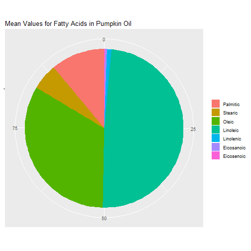

Fats and Oils
Basic Structure: Triglycerides
For this demo, I used the oil dataset provided with the caret library. The dataset tracks the types of fatty acids in commercially available oils.
For my interactive demo, I used plotly to allow the user to select different values for the fatty acids, then found the oil that most closely matched their 'mix'. But I cannot get plotly to work correctly here. Therefore, this demo will show a heatmap of the data that visualizes the fatty acids in each type of oil.

Leward Community College. 17.2: Fats and Oils. Chemistry Libre Texts. Retrieved 14 May 2019 from https://chem.libretexts.org/Bookshelves/Introductory_Chemistry/Book%3A_The_Basics_of_GOB_Chemistry_(Ball_et_al.)/17%3A_Lipids/17.2%3A_Fats_and_Oils.
RDocumentation. oil. Retrieved 12 May 2019 from https://www.rdocumentation.org/packages/caret/versions/6.0-81/topics/oil.
Wahrburg, U. What are the health effects of fat? Eur J Nutr (2004) 43(Suppl 1): i6. https://doi.org/10.1007/s00394-004-1103-9